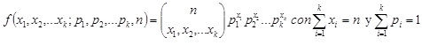

Distribucion multinomial:
El experimento binomial se convierte en un experimento multinomial si cada prueba tiene mas de dos resultados posibles.
La clasificacion de un producto fabricado como ligero, pesado o aceptable y el registro de los accidentes
en cierto crucero de acuerdo con el dia de la semana constituyen experimentos multinomiales (Walpole, et. al., 2012)
En general, si un ensayo dado puede producir los k resultados, E1, E2, …,Ek con probabilidades p1, p2, …,pk entonces
la distribucion de probabilidad de las variables aleatorias X1, X2,…,Xk que representa el numero de ocurrencias para E1, E2, …,Ek
en n ensayos independientes, es (Walpole et. al., 1999; 2012):
